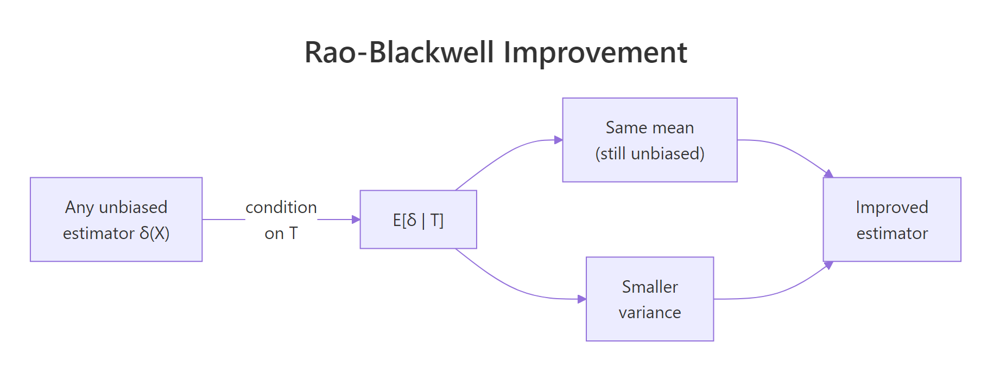
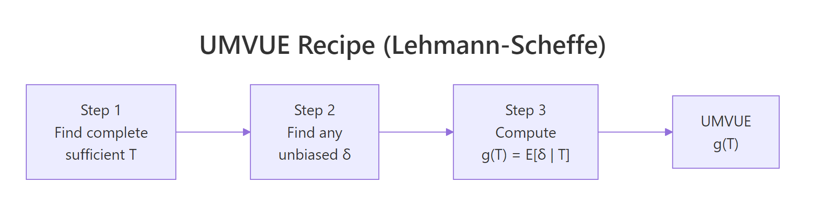
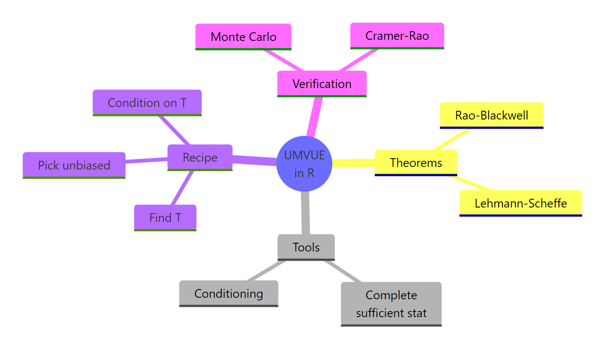

UMVUE in R: Rao-Blackwell Theorem & Lehmann-Scheffé Theorem
The UMVUE, or uniformly minimum variance unbiased estimator, is the most precise unbiased estimate you can build for a parameter. The Rao-Blackwell theorem tells you how to improve any unbiased estimator, and the Lehmann-Scheffé theorem certifies when that improvement is the best possible.
Why is the UMVUE the gold standard for unbiased estimation?
Suppose you want to estimate the rate $\lambda$ of a Poisson process from $n$ samples. You could use just the first observation $X_1$: it is unbiased. Or the sample mean: also unbiased. Both give the right answer on average, but one shoots wide and the other lands close. The UMVUE is whichever unbiased estimator has the smallest variance, so every individual estimate stays near the true value. Let's see the gap.
Both estimators have a sample mean close to $\lambda = 2$ (try mean(est_x1) and mean(est_mean)), so both are unbiased. But the variance of est_x1 is roughly ten times larger than the variance of est_mean. With $n = 10$ samples, the UMVUE squeezes ten times more precision out of the same data. That is what "minimum variance" buys you.
For an unbiased estimator the mean squared error simplifies to the variance, since $\text{MSE} = \text{Bias}^2 + \text{Var} = \text{Var}$. So a smaller variance is the same as a smaller expected squared error. The word "uniformly" in UMVUE means this dominance holds for every value of the parameter, not just a lucky one.
Try it: Repeat the comparison with n = 20 instead of 10. Predict the variance ratio before you run it.
Click to reveal solution
Explanation: $\text{Var}(X_1) = \lambda$ but $\text{Var}(\bar X) = \lambda / n$. The ratio scales linearly with $n$.
How does the Rao-Blackwell theorem improve any unbiased estimator?
The Rao-Blackwell theorem hands you a recipe to improve any unbiased estimator that is not already a function of a sufficient statistic. The recipe is to condition it on the sufficient statistic. The conditioned estimator is still unbiased, and its variance is no larger than the original. Often it is much smaller.

Figure 1: Rao-Blackwell improvement: conditioning any unbiased estimator on a sufficient statistic preserves its mean and lowers its variance.
The formal statement is: if $\delta(X)$ is unbiased for $\theta$ and $T$ is sufficient, then
$$\varphi(T) = E[\delta(X) \mid T]$$
is also unbiased for $\theta$, and
$$\text{Var}(\varphi(T)) \le \text{Var}(\delta(X)).$$
Equality holds only when $\delta$ is already a function of $T$ alone. The intuition is that $T$ contains all the information about $\theta$ in the sample, so conditioning on $T$ averages over the noise in $\delta$ that has nothing to do with $\theta$.
Let's verify this on a Bernoulli model. The sample sum $T = X_1 + \dots + X_n$ is sufficient for $p$. The naive estimator $\delta = X_1$ is unbiased for $p$ but ignores all but one observation. By symmetry, $E[X_1 \mid T = t] = t/n$, so the Rao-Blackwellized version is the sample mean.
Both estimators have a mean near $p = 0.3$, so Rao-Blackwellization preserved the unbiasedness. The variance dropped from about $p(1-p) \approx 0.21$ to $p(1-p)/n \approx 0.021$, a factor of $n = 10$. The Monte Carlo numbers match the textbook formulas almost exactly. This is what "no larger" looks like in practice: a tenfold variance reduction for free.
Try it: Apply the same idea to estimate $p^2$. The naive estimator is $\delta = X_1 \cdot X_2$, which equals 1 only when both are 1, so it is unbiased for $p^2$. Find its Rao-Blackwellization.
Click to reveal solution
Explanation: Both estimators target $p^2 = 0.09$. The Rao-Blackwellized version has roughly 11 times smaller variance because it averages over all pairs of observations rather than relying on the first two.
What does the Lehmann-Scheffé theorem add to make the estimator unique?
Rao-Blackwell promises improvement, not optimality. Without an extra ingredient, two different starting estimators could give two different Rao-Blackwellized estimators, and there would be no way to pick a winner. That extra ingredient is completeness.
A statistic $T$ is complete if the only unbiased estimator of zero that is a function of $T$ is the zero function: $E_\theta[g(T)] = 0$ for all $\theta$ implies $g(T) = 0$ almost surely. Completeness rules out non-trivial unbiased rivals built from $T$.
The Lehmann-Scheffé theorem is the payoff: if $T$ is complete and sufficient and $\varphi(T)$ is unbiased for $\theta$, then $\varphi(T)$ is the unique UMVUE.
We can confirm uniqueness empirically. Take two different unbiased starters for $p$ in the Bernoulli model: $\delta_a = X_1$ and $\delta_b = (X_2 + X_3)/2$. After Rao-Blackwellizing each, both should collapse to the same function of $T$.
Both raw estimators are unbiased (means near $p = 0.3$). They have different variances because they use different subsets of the data. After Rao-Blackwellizing, both collapse to the same function $T/n$, with one shared variance. Uniqueness is exactly what Lehmann-Scheffé guarantees.
Try it: Confirm Lehmann-Scheffé numerically by computing $E[X_1 \mid T = t]$ from the simulated samples (not the formula) and comparing to $t/n$ across the support of $T$.
Click to reveal solution
Explanation: The empirical conditional mean of $X_1$ given $T = t$ tracks the formula $t/n$ closely, confirming the conditioning calculation that drives Rao-Blackwell.
How do you find the UMVUE step-by-step in practice?
Once you have the two theorems, the construction is mechanical.

Figure 2: The three-step Lehmann-Scheffé recipe for finding a UMVUE.
The three steps:
- Find a complete sufficient statistic $T$. For an exponential family in canonical form, the canonical sufficient statistic is automatically complete. Most named distributions (Normal, Poisson, Binomial, Gamma, Beta, Exponential) fall in this camp.
- Get an unbiased function of $T$. Either find any unbiased estimator $\delta$ and compute $g(T) = E[\delta \mid T]$, or guess $g(T)$ directly so that $E[g(T)] = \theta$.
- Lehmann-Scheffé certifies the result. $g(T)$ is the unique UMVUE.
Apply this to a Normal sample. With $X_1, \dots, X_n \sim N(\mu, \sigma^2)$ both parameters unknown, $T = (\sum X_i, \sum X_i^2)$ is complete sufficient. The sample mean $\bar X$ is an unbiased function of $T$, hence the UMVUE for $\mu$. The bias-corrected sample variance $s^2 = \frac{1}{n-1}\sum (X_i - \bar X)^2$ is also a function of $T$ and is unbiased for $\sigma^2$, hence the UMVUE for $\sigma^2$.
Both bias values sit near zero, so $\bar X$ and $s^2$ are unbiased as advertised. The Monte Carlo variance of $\bar X$ matches $\sigma^2/n = 4/20 = 0.20$, and the variance of $s^2$ matches the textbook value $\frac{2\sigma^4}{n-1} = \frac{32}{19} \approx 1.684$. Lehmann-Scheffé says no other unbiased estimator can do better.
Try it: Find the UMVUE for $\sigma$ (not $\sigma^2$) in a Normal model. Hint: it is a constant times the sample standard deviation.
Click to reveal solution
Explanation: The raw $s$ underestimates $\sigma$ by a few percent. Multiplying by the correction $c_n$ removes that bias, and Lehmann-Scheffé makes the corrected version the UMVUE.
How do you verify your UMVUE attains the Cramér-Rao lower bound?
The Cramér-Rao lower bound (CRLB) is a floor on the variance of any unbiased estimator under regularity conditions. If your candidate UMVUE has variance equal to the CRLB, you have an extra confirmation that it is optimal in a strong sense (it is also called efficient).
For an iid sample of size $n$ with Fisher information $I(\theta)$ per observation, the bound is
$$\text{Var}(\hat\theta) \ge \frac{1}{n \cdot I(\theta)}.$$
For Normal samples with known $\sigma$, the Fisher information for $\mu$ is $I(\mu) = 1/\sigma^2$, so the CRLB for $\mu$ is $\sigma^2/n$. The sample mean attains this exactly.
The Monte Carlo variance and the CRLB match to three decimal places, with a ratio of essentially 1. The sample mean saturates the bound. This is the textbook outcome: in a Normal model with known variance, the sample mean is the efficient UMVUE for the mean.
Try it: Compute the CRLB for the Bernoulli mean and verify the sample mean attains it.
Click to reveal solution
Explanation: The Monte Carlo variance matches $p(1-p)/n$ within sampling error, confirming that the sample mean is the efficient UMVUE for the Bernoulli parameter.
When does the UMVUE underperform a biased estimator?
UMVUE means best unbiased, not best overall. Mean squared error decomposes as
$$\text{MSE}(\hat\theta) = \text{Bias}(\hat\theta)^2 + \text{Var}(\hat\theta).$$
A small bias can sometimes buy a much larger variance reduction. Then a biased estimator beats the UMVUE on MSE.
The classic example is variance estimation for a Normal sample. The UMVUE divides $\sum (X_i - \bar X)^2$ by $n - 1$. The maximum likelihood estimator (MLE) divides by $n$. The MLE is biased downward, but its variance is smaller, and the trade goes its way for small $n$.
The UMVUE has bias near zero. The MLE has bias of roughly $-\sigma^2/n = -0.2$. But the MLE's variance is smaller, and that gap more than offsets the squared bias of $0.04$. The MLE wins on MSE here.
Try it: Compute the MSE of three $\sigma^2$ estimators that divide by $n - 1$, $n$, and $n + 1$. Find which divisor wins.
Click to reveal solution
Explanation: Dividing by $n + 1$ is the minimum-MSE estimator of $\sigma^2$ for Normal data, even though it has more bias than dividing by $n$. The UMVUE (divide by $n - 1$) is the worst on MSE.
Practice Exercises
Exercise 1: Poisson UMVUE for the probability of zero
Given $X_1, \dots, X_n \sim \text{Poisson}(\lambda)$, find the UMVUE for $\theta = e^{-\lambda}$, the probability that a single observation equals zero. Hint: $T = \sum X_i$ is complete sufficient. The starter $\delta = I(X_1 = 0)$ is unbiased for $\theta$. Use $E[\delta \mid T = t] = ((n-1)/n)^t$. Implement the UMVUE and verify unbiasedness across $\lambda \in \{0.5, 1, 2\}$.
Click to reveal solution
Explanation: The umvue_mean tracks $e^{-\lambda}$ closely for every $\lambda$, so the estimator is unbiased on every parameter value. That is the uniformly in UMVUE.
Exercise 2: UMVUE for the Normal standard deviation
Find the constant $c_n$ that makes $c_n \cdot s$ unbiased for $\sigma$ in a Normal model. Confirm by simulation that $c_n \cdot s$ is unbiased and that $s$ alone is biased downward.
Click to reveal solution
Explanation: $s$ underestimates $\sigma$ by about $1.8\%$. Multiplying by $c_n$ removes the bias, and Lehmann-Scheffé says the corrected version is the unique UMVUE for $\sigma$.
Exercise 3: UMVUE for a difference of Normal means
Given two independent samples $X_1, \dots, X_n \sim N(\mu_1, \sigma^2)$ and $Y_1, \dots, Y_m \sim N(\mu_2, \sigma^2)$, show that $\bar X - \bar Y$ is the UMVUE for $\mu_1 - \mu_2$. Verify with simulation that it is unbiased and that its variance equals the CRLB.
Click to reveal solution
Explanation: Bias is near zero; the Monte Carlo variance matches the CRLB $\sigma^2/n + \sigma^2/m \approx 0.556$. So $\bar X - \bar Y$ is both unbiased and efficient, and Lehmann-Scheffé makes it the unique UMVUE.
Complete Example: end-to-end UMVUE for $P(X=0)$ in a Poisson model
Pull the recipe together on one example. Goal: estimate $\theta = e^{-\lambda}$ from $X_1, \dots, X_n \sim \text{Poisson}(\lambda)$ and prove the estimator beats every alternative.
Step 1: identify the complete sufficient statistic. Poisson is in the exponential family with canonical parameter $\log \lambda$ and canonical statistic $T = \sum X_i$. So $T$ is complete sufficient.
Step 2: pick an unbiased starter. $\delta(X) = I(X_1 = 0)$ has $E[\delta] = P(X_1 = 0) = e^{-\lambda}$, which is exactly $\theta$.
Step 3: Rao-Blackwellize. Conditional on $T = t$, the vector $(X_1, \dots, X_n)$ is multinomial$(t; 1/n, \dots, 1/n)$, so $X_1 \mid T = t \sim \text{Binomial}(t, 1/n)$. Therefore
$$\varphi(T) = E[I(X_1 = 0) \mid T] = P(X_1 = 0 \mid T) = \left(\frac{n-1}{n}\right)^T.$$
By Lehmann-Scheffé, $\varphi(T) = ((n-1)/n)^T$ is the unique UMVUE.
Step 4: implement and benchmark. Compare three estimators: the UMVUE, the naive starter $\delta$, and the plug-in MLE $e^{-\bar X}$ (biased).
The UMVUE is essentially unbiased (bias around $0.001$). The naive starter is also unbiased but has 16 times the variance, exactly the kind of slack Rao-Blackwell removes. The MLE has the smallest variance but visible bias; on MSE it edges out the UMVUE here because $n$ is small. As $n$ grows the MLE bias shrinks and all three converge, but the UMVUE has the cleanest interpretation: among unbiased estimators, no one can beat it.
Summary
| Concept | Role | R checklist |
|---|---|---|
| Sufficient statistic | Captures all info about $\theta$ | sum, mean, max, ... |
| Completeness | Removes unbiased rivals built from $T$ | Exponential family ⇒ automatic |
| Rao-Blackwell | Improves any unbiased $\delta$ via $E[\delta \mid T]$ | Replicate, condition, compare |
| Lehmann-Scheffé | Certifies the result is the unique UMVUE | Need complete + sufficient $T$ |
| Cramér-Rao bound | Optional efficiency check | Compare Var to $1 / (n \cdot I(\theta))$ |
| MSE check | UMVUE is best unbiased, not best overall | Compare to MLE / shrinkage |

Figure 3: A concept map of the UMVUE construction and its R verification tools.
The pattern repeats across distributions: identify $T$, find or build an unbiased function of $T$, and Lehmann-Scheffé certifies the answer. Monte Carlo in R lets you confirm unbiasedness and variance dominance on every example you meet.
References
- Casella, G., & Berger, R. L. (2002). Statistical Inference (2nd ed.). Duxbury. Chapter 7. Link
- Lehmann, E. L., & Casella, G. (1998). Theory of Point Estimation (2nd ed.). Springer. Chapter 2. Link
- Wikipedia. Lehmann-Scheffé theorem. Link
- Wikipedia. Minimum-variance unbiased estimator. Link
- Watkins, J. Topics in Probability Theory and Stochastic Processes: Lehmann-Scheffé chapter. University of Arizona. Link
- Mackey, L. Stanford STATS 300A Lecture 4: Sufficiency, Completeness, UMVU. Link
- R Core Team. An Introduction to R. Link
Continue Learning
- Sufficient Statistics in R, the prerequisite. How to identify $T$ and prove sufficiency by the factorisation theorem.
- Complete & Ancillary Statistics in R, the second ingredient for Lehmann-Scheffé. How to verify completeness and use Basu's theorem.
- Maximum Likelihood Estimation in R, the standard alternative when bias is acceptable. Asymptotically efficient and often easier to compute.